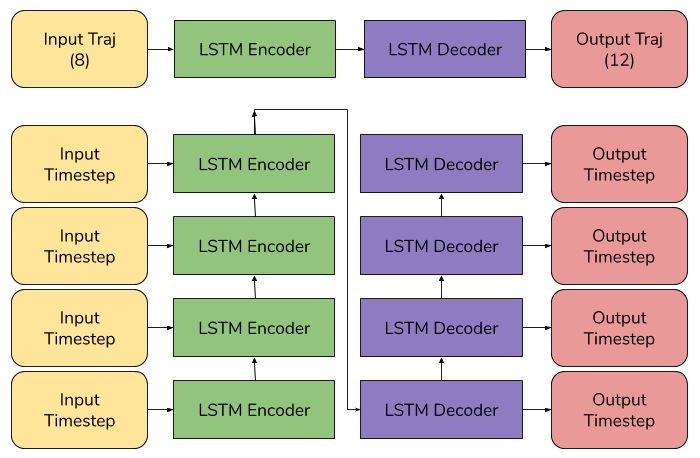
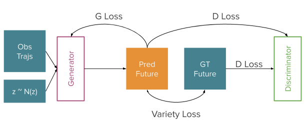
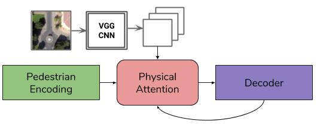
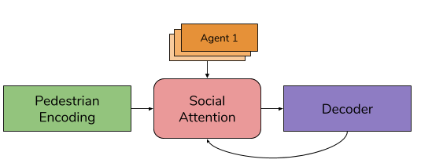
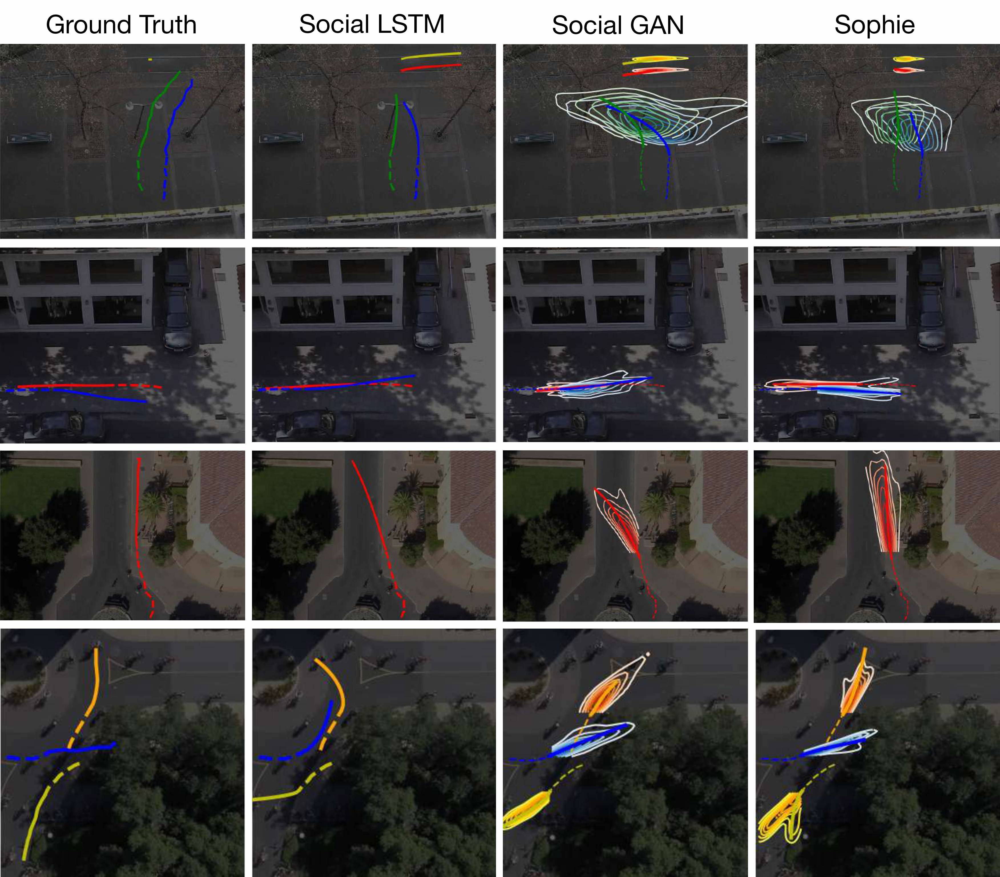

SoPhie: An Attentive GAN for Predicting Paths Compliant to Social and Physical Constraints
Amir Sadeghian1*, Vineet Kosaraju1*, Ali Sadeghian2, Noriaki Hirose1, S. Hamid Rezatofighi1,3, Silvio Savarese1
1Stanford University 2University of Florida 3University of Adelaide *Equal Contribution
Preprint • Paper • Code • Poster
Introduction
This paper addresses the problem of path prediction for multiple interacting agents in a scene, which is a crucial step for many autonomous platforms such as self-driving cars and social robots. We present SoPhie; an interpretable framework based on Generative Adversarial Networks (GANs), which leverage two sources of information, 1) the path history of all the agents in a scene, and 2) the scene context information, using images of the scene.
To predict a future path for an agent, both physical and social information must be leveraged. Previous work has not been successful in jointly modelling physical and social interactions. Our approach blends a social attention mechanism with physical attention that helps the model to learn where to look in a large scene and extract the most salient parts of the image relevant to the path. Whereas the social attention component aggregates information across the different agent interactions and extracts the most important trajectory information from the surrounding neighbors.
SoPhie also takes advantage of GANs to generate more realistic samples and to capture the uncertain nature of the future paths by modeling its distribution. All these mechanisms enable our approach to predict socially and physically plausible paths for the agents and to achieve state-of-the-art performance on several different trajectory forecasting benchmarks.

Architecture
Our core model architecture is motivated by several key insights that build on prior research efforts in the field:
LSTM Encoder-Decoder
Building off prior work in sequence modeling and trajectory prediction, we use an encoder-decoder architecture with both the encoder and decoder built using LSTMs. In our case of the problem setting, we encode a sequence of 8 observations and decode a sequence of 12 future predictions. This LSTM encoder-decoder architecture works well for short sequences (commonly researched problem settings include viewing 8 frames and predicting 12, or observing 8 and predicting 8). This architecture also allows us to utilize self-attention, as we discuss below.
Generative Modeling
To get to a destination, there often exists more than a single choice for a path, which is the fuzzy nature of human motion. Indeed, there is a wide range of traversable paths towards a destination. To capture this variability, we model the problem in a generative setting by producing multiple trajectories, as opposed to strictly predictive, which just learns the trajectories present in the dataset. We implement this generative model using the commonly used GAN framework, where we train a generator to create trajectories that match social and physical constraints, and we train a discriminator to predict whether those trajectories are real or fake, in a minmax game. For training we use the traditional GAN loss, as well as variety loss to make our predicted trajectories more realistic while preserving some variability.
Physical Scene Attention
In order to be able to walk in real-world terrains and avoid obstacles, humans constantly process the local and global spatial information of the surroundings and pay attention to important physical constraints. For example, when on a curved path, we generally follow that path instead of cutting across terrain like grass or roads. Modeling these physical interactions is a key component of trajectory forecasting.
We model these interactions by incorporating a top-down view of the scene as an input to our model. In particular, we extract VGG features from this image scene and apply soft attention over this scene with respect to the pedestrian whose trajectory we are decoding. This allows the pedestrian's forecasted trajectory to use the most important parts of the feature map of the scene.
Social Pedestrian Attention
To avoid collisions with other people, disturbing their personal space, or interrrupting some social interactions, humans have a good understanding of others' movements and the social norms of an enviornment. Further, humans unconciously take into account that some pedestrians have more influence than others in making movement decisions. For when walking towards a group of people, the ego agent cares more about the social interactions with that group of people than it does with any other pedestrians in the scene. Modeling these social interactions is non-trivial but highly important for pedestrian behavior understanding.
Prior work has modeled these interactions using social pooling, where the embeddings for all agents in a scene are pooled together and used to form predictions. While this allows for modeling of global interactions, it does not allow different agents to pay more attention to some pedestrians than others. Instead, all pedestrians in a scene pay equal attention to the same pedestrians. We address this flaw by introducing self-attention over the encodings of other pedestrians in a scene when decoding an ego pedestrian's trajectory. We enforce a consistent ordering of the other pedestrians by sorting them basd on their distance to the ego agent. This allows for a more robust understanding of local and global social interactions, at the cost of more operations and a higher runtime.
Results
We see that generally the predictions from Sophie are more aware of the social and physical constraints of a scene. The generative variance is lower, there are less collisions with other pedestrians, and pedestrians tend to follow walking spaces like sidewalks while avoiding spaces like roads. These results are promising in incorporating the data-driven constraints of a scene in a fully generative model.
